Publications
Journals
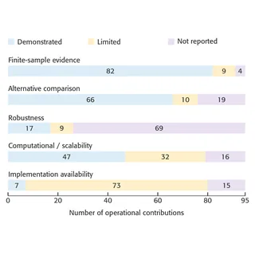
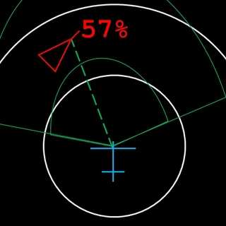
The Journal of Defense Modeling and Simulation, 2026
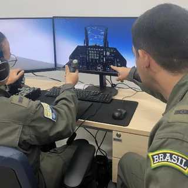
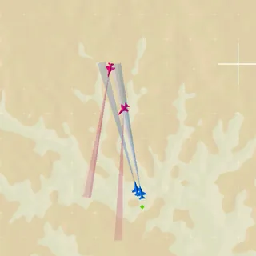
* Equal contribution
IEEE Access, 2025
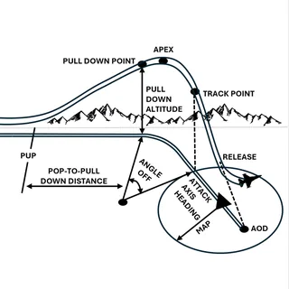
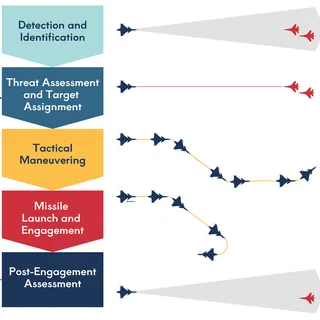
* Equal contribution
IEEE Access, 2025
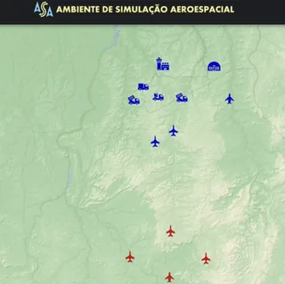
Spectrum: The Journal of Operational Applications in Defense Areas, 2025
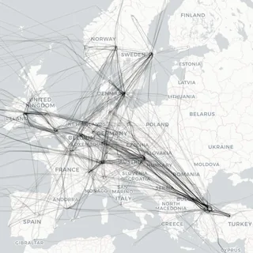
Journal of Open Aviation Science, 2025
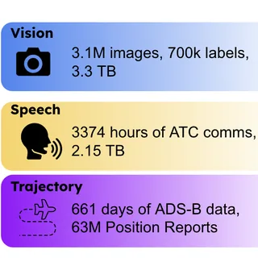
Scientific Data (Nature), 2025
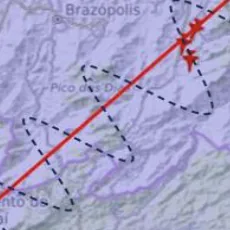
Spectrum: The Journal of Operational Applications in Defense Areas, 2024
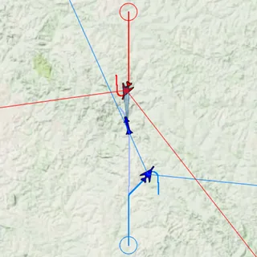
IEEE Latin America Transactions, 2022
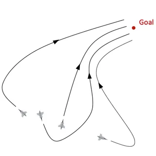
Simulation: Transactions of the Society for Modeling and Simulation International, 2022
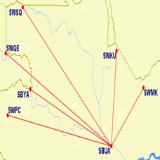
Spectrum: The Journal of Operational Applications in Defense Areas, 2020
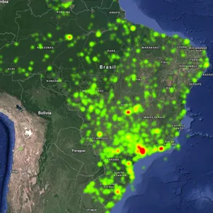
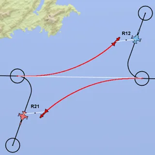
Spectrum: The Journal of Operational Applications in Defense Areas, 2017
Conferences
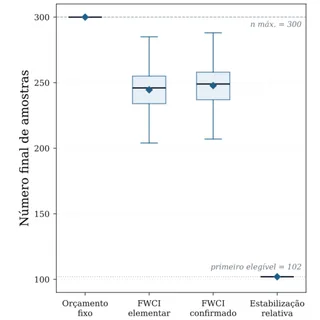
Simpósio de Aplicações Operacionais em Áreas de Defesa (SIGE), 2026
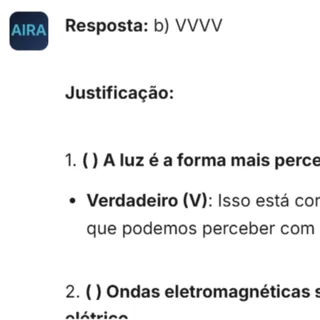
Congress of the International Council of the Aeronautical Sciences (ICAS), 2026
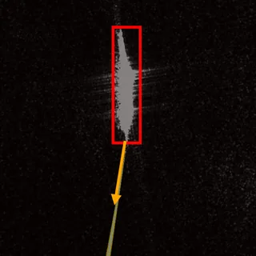
AIAA AVIATION Forum, 2026
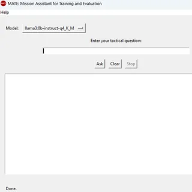
Conference on Neural Information Processing Systems (NeurIPS), LatinX in AI (LXAI) Workshop, 2025
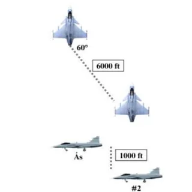
Simpósio de Aplicações Operacionais em Áreas de Defesa (SIGE), 2025
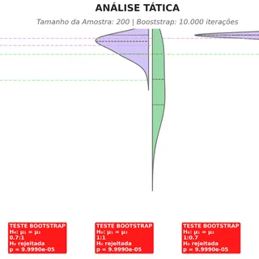
Simpósio de Aplicações Operacionais em Áreas de Defesa (SIGE), 2025
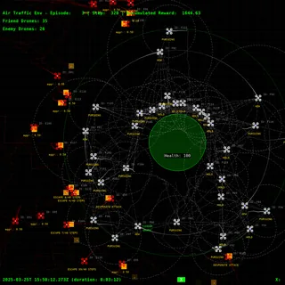
Congresso Acadêmico sobre Defesa Nacional (CADN), 2025
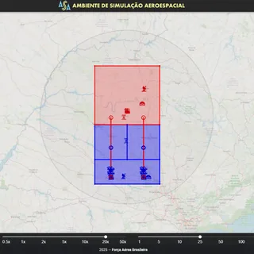
Computational Science and Computational Intelligence (CSCI), 2025
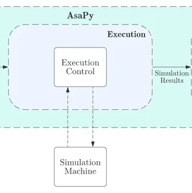
Conference on Principles of Advanced Discrete Simulation (PADS), 2024
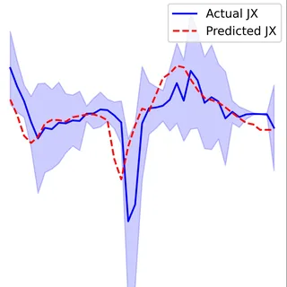
Winter Simulation Conference (WSC), PhD Colloquium, 2024
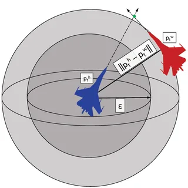
Conference on Principles of Advanced Discrete Simulation (PADS), PhD Colloquium, 2024
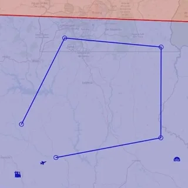
Congresso Acadêmico sobre Defesa Nacional (CADN), 2024
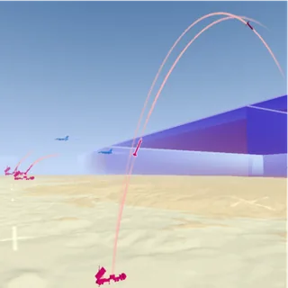
Interservice/Industry Training, Simulation and Education Conference (I/ITSEC), 2023
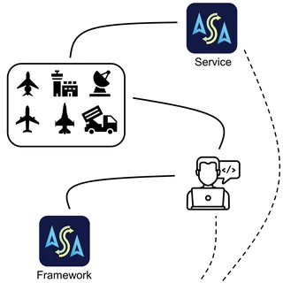
Congresso Acadêmico sobre Defesa Nacional (CADN), 2023
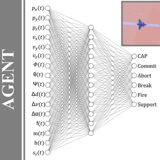
Conference on Principles of Advanced Discrete Simulation (PADS), PhD Colloquium, 2023
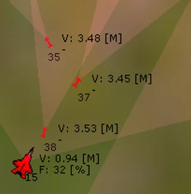
Winter Simulation Conference (WSC), 2022
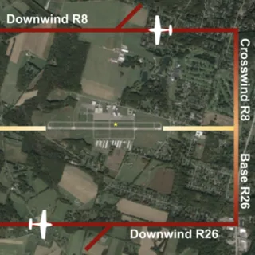
International Conference on Robotics and Automation (ICRA), Aerial Robotics Workshop, 2022
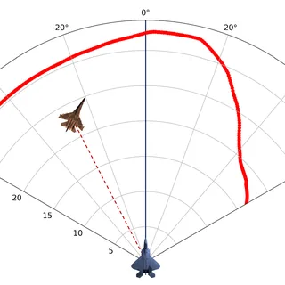
Brazilian Conference on Intelligent Systems (BRACIS), 2021
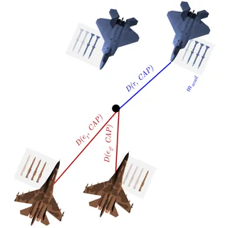
Latin American Robotics Symposium (LARS), 2021
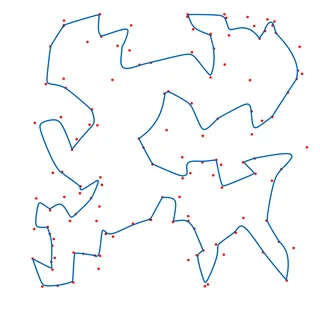
National Meeting on Artificial and Computational Intelligence (ENIAC), 2021
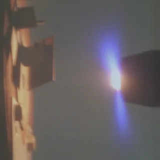
XIX Encontro de Iniciação Científica e Pós-Graduação do ITA (ENCITA), 2013
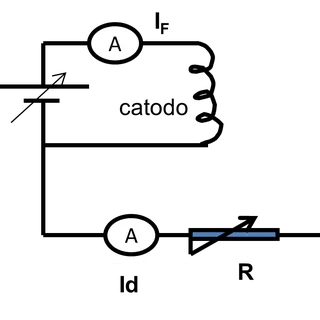
XVIII Encontro de Iniciação Científica e Pós-Graduação do ITA (ENCITA), 2012
Theses
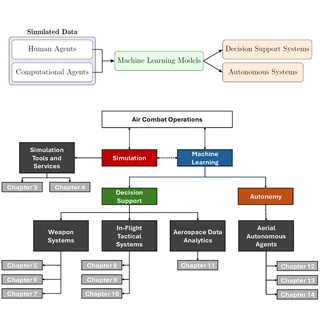
PhD Thesis, Instituto Tecnológico de Aeronáutica, 2025
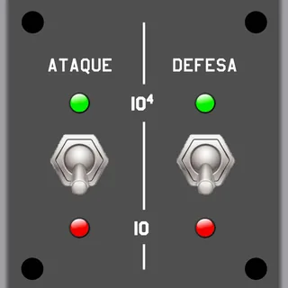
Master's Thesis, Instituto Tecnológico de Aeronáutica, 2018
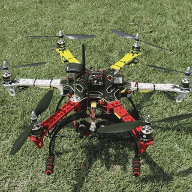
Senior Thesis, Instituto Tecnológico de Aeronáutica, 2015